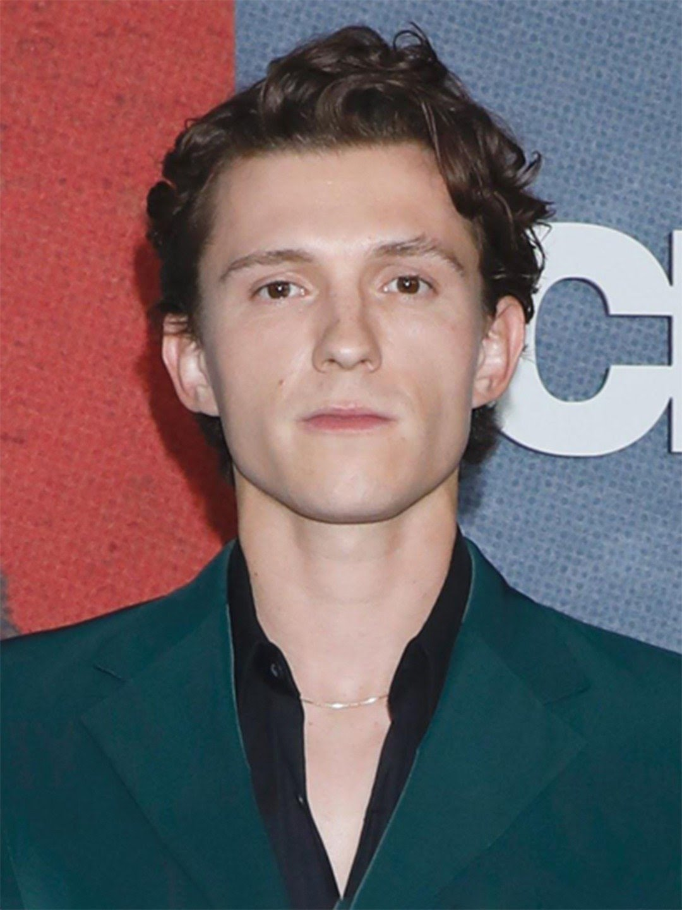

Tom holland
Biography
Thomas Stanley Holland was born in Kingston-upon-Thames, Surrey, to Nicola Elizabeth (Frost), a photographer, and Dominic Holland (Dominic Anthony Holland), who is a comedian and author. His paternal grandparents were from the Isle of Man and Ireland, respectively. He lives with his parents and three younger brothers - Paddy and twins Sam and Harry. Tom attended Donhead Prep School. Then, after a successful eleven plus exam, he became a pupil at Wimbledon College. Having successfully completed his GCSEs, in September 2012 Tom started a two-year course in the BRIT School for Performing Arts & Technology notable for its numerous famous alumni. Holland began dancing at a hip hop class at Nifty Feet Dance School in Wimbledon, London. His potential was spotted by choreographer Lynne Page (who was an Associate to Peter Darling, choreographer of Billy Elliot and Billy Elliot the Musical) when he performed with his dance school as part of the Richmond Dance Festival 2006. After eight auditions and subsequent two years of training, on 28 June 2008 Tom made his West End debut in Billy Elliot the Musical as Michael, Billy's best friend. He gave his first performance in the title role of Billy on 8 September 2008 getting rave reviews praising his versatile acting and dancing skills. In September 2008 Tom (together with co-star Tanner Pflueger) appeared on the news programme on channel FIVE and gave his first TV interview. In 2009 Tom was featured on ITV1 show "The Feel Good Factor". At the launch show on 31 January he and two other Billy Elliots, Tanner Pflueger and Layton Williams, performed a specially choreographered version of Angry Dance from Billy Elliot the Musical, after which Tom was interviewed by host Myleene Klass. Then he became involved into training five ordinary British schoolboys learning to get fit and preparing their dance routine (fronted by Tom) for the final "The Feel Good Factor" show on 28 March 2009. On 11 March 2010, Tom, along with fellow Billy Elliots Dean-Charles Chapman and Fox Jackson-Keen appeared on The Alan Titchmarsh Show on ITV1. On 8 March 2010, to mark the fifth anniversary of Billy Elliot the Musical, four current Billy Elliots, including Tom Holland, were invited to 10 Downing Street to meet the Prime Minister Gordon Brown. It was Tom Holland who was chosen to be a lead at the special fifth anniversary show on 31 March 2010. Elton John, Billy Elliot the Musical composer, who was at the audience, called Tom's performance "astonishing" and said that he was "blown away" by it. Holland had been appearing on a regular basis as Billy in Billy Elliot the Musical rotating with three other performers till 29 May 2010 when he finished his run in the musical. In two months after leaving Billy Elliot the Musical, Holland successfully auditioned for a starring role in the film The Impossible (directed by Juan Antonio Bayona) alongside Naomi Watts and Ewan McGregor. The Impossible was based on a true story that took place during the 2004 Indian Ocean earthquake. The film premiered at the Toronto International Film Festival on September 9, 2012, and was released in Europe in October 2012, and in North America in December 2012. Tom has received universal praise for his performance, in particular: "What a debut, too, from Tom Holland as the eldest of their three lads" (The Telegraph); "Tom Holland, making one of the finest feature debuts in years" (HeyUGuys); "the excellent Tom Holland" (The Guardian); "The child performers are uncanny and there is an especially terrific performance from Tom Holland as the resourceful, levelheaded Lucas terrified but tenacious in the face of an unspeakable ordeal" (Screen Daily); "Young Holland in particular is astonishingly good as the terrified but courageous Lucas." (The Hollywood Reporter); "However, the real acting standout in The Impossible is the performance of Tom Holland as the eldest son Lucas. His portrayal is genuine, and at no moment does it feel melodramatic and forced. The majority of his scenes are separate from the lead actors and for the most part it feels like The Impossible is Holland's film" (Entertainment Maven); "Mr. Holland, meanwhile, matures before our eyes, navigating the passage from adolescent self-absorption to profound and terrible responsibility. He is a terrific young actor" (New York Times). Tom has given a number of interviews about his role in The Impossible. In particular, he talked on video to Vanity Fair Senior West Coast editor Krista Smith and with IAMROGUE's Managing Editor Jami Philbrick. He has also given interviews to The Hollywood Reporter, to the MovieWeb, to Today Show on NBC and to other outlets. Tom's director and co-stars have also talked about him. Juan Antonio Bayona: "He had this extraordinary ability to get into the emotion and portray it in a very, very easy way. The best I'd ever seen in a kid." Ewan McGregor: "It was wonderful watching Tom who had never worked in front of a camera before, to see him really get it and grow as a film actor as he went along. He's really talented and polite to everyone. It's very easy for children to lose perspective but he's absolutely on the right road and a brilliant actor." Naomi Watts: "He has an incredible emotional instrument and an unbelievable sense of himself... Tom Holland and I had a couple of moments where we came together and I could just tell how wonderful he was and what a beautiful instrument he had. It was just easy to work with him, that was one of the greatest highlights for me: discovering a friendship with Tom off-screen and this beautiful relationship between mother and son on-screen. The intimacy that develops through the course of the film between Lucas and Maria, I just loved that relationship. I mean, Tom is a beyond gifted actor. He's just a raw, open talent that is just so easy to work with. And Tom, he's inspiring, he kind of lifts everyone's game around him because he can do nothing but tell the truth. He was great." In his turn, Tom Holland has returned favours to Naomi Watts when he was asked to present Desert Palm Achievement Award to her at Palm Springs International Film Festival. According to HitFix: "One recurring theme of the night was how the introductions were often better than actual winner's speeches... The best intro, however, had to go to 16-year-old Tom Holland who intro'd his "Impossible" co-star Watts. Holland admitted of all of Watts' great performances his dad had only let him see "King Kong" and while they spent six weeks shooting in a water tank he didn't know it was "difficult" because he actually "loved it"... Most important, this was Holland's first film role and he sweetly noted, "From the moment I met you, you took my hand and you never let go." Cue the "awwww" from the audience." The presentation is available on video. In 2011, Holland was cast in British version of the animation film Arrietty, produced by Japan's cult Studio Ghibli. He has provided voice over for the principal character Sho. In 2012 Tom Holland played the starring role of Isaac in the film "How I lived Now", (directed by Kevin Macdonald) alongside Saoirse Ronan. The film was released in 2013. On 17 October 2012, Holland became a recipient of Hollywood Spotlight Award for his role in The Impossible. "We are very excited that we will be able to recognize acting talents that are on the road to discovery and stardom," said Carlos de Abreu, founder and executive director of the Hollywood Film Awards in a statement. On 6 December 2012 it was announced that Holland became a winner of the National Board of Review award in the "Breakthrough Actor" category. In the end of December 2012, Holland was voted a winner for the year's Best Youth Performance in Nevada Critics Awards. In December 2012, Holland received a number of nominations for his role in The Impossible: for the 18th annual Critics' Choice Movie Awards, in the "Best Young Acror/Acress" category; for Chicago Film Critics Association Awards 2012 in the "Most Promising Performer" category; for the 27th Goya Awards in the "Best New Actor" category; for the Washington D.C. Area Film Critics Association Awards 2012 in the "Best Youth Performance" category; for the London Film Critics Circle Awards 2012 in the "Young British Performer of the Year" category. Kristopher Tapley, Editor-at-Large of HitFix, reported on 27 August 2012 that Summit Entertainment, the company responsible for distribution of The Impossible in USA, would be campaigning Holland rather than McGregor as the lead, and strongly argued that Tom Holland deserved to be nominated for an Academy Award in the Best Actor category. The fact of long-listing for an Academy Award was confirmed in the article in the Hollywood Reporter: "And though McGregor stars as his father in the film, Holland has been submitted as the lead actor for awards consideration. Regardless if he receives any nominations, his performance as the strong-willed and determined eldest son is garnering critical acclaim." As one of the most promising young actors, Holland was featured in Screen International's "UK Stars of Tomorrow - 2012" and in Variety's "Youth Impact Report 2012". Holland has been signed up by William Morris Endeavor (WME) global talent agency and is represented by Curtis Brown literary and talent agency. In 2015, Tom was cast as Peter Parker/Spider-Man in Sony and Marvel's films. He has played the role in Captain America: Civil War (2016), Spider-Man: Homecoming (2017), and Avengers: Infinity War (2018).
Movies
- Movie 1 (2020)
- Movie 2 (2018)
- Movie 3 (2015)
Awards
- Best Actor - Film Festival 2021
- Outstanding Performance - Awards 2019